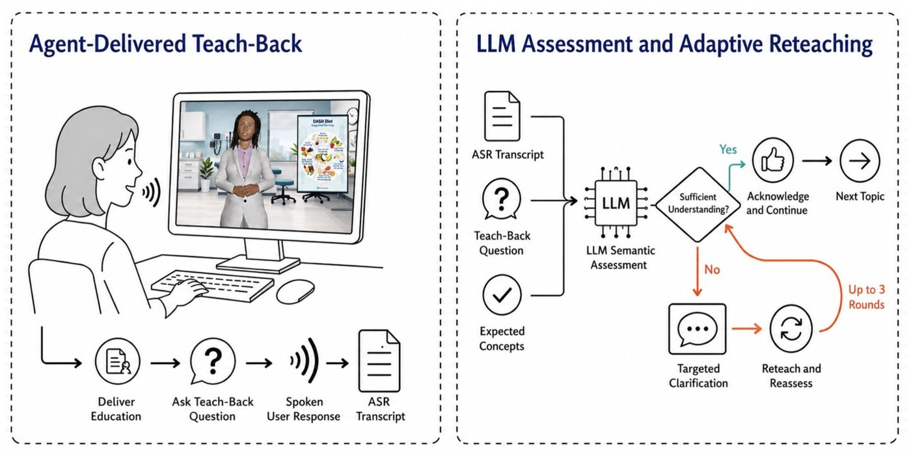
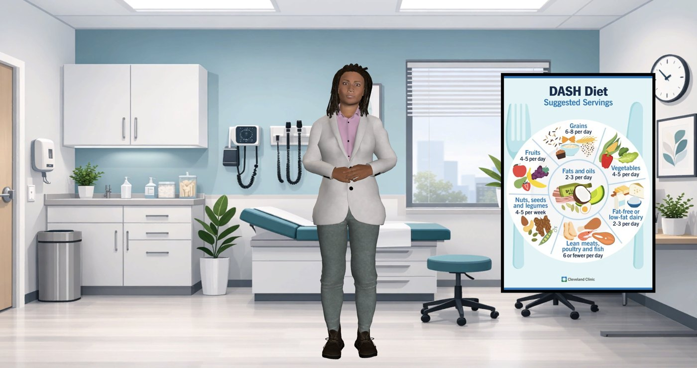
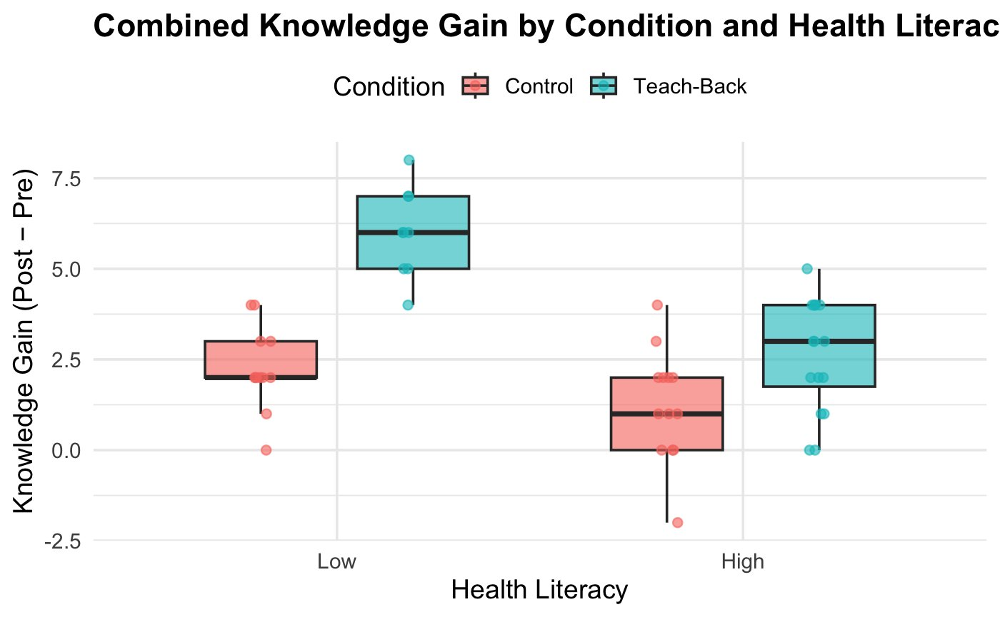

Did You Get That? Open-Ended Teach-Back with an Embodied Agent and an LLM Judge Under review
An embodied agent that asks people to explain health information in their own words, judges the answer with a language model, and reteaches what is missing.
Associated with: Relational Agents Group, Northeastern University; Mina Fallah, Chongyang Wang, Prof. Timothy W. Bickmore
On the Problem Map: 2.3 AI can't see the whole learner3.2 Timely intervention
Background
Limited health literacy makes health information hard to understand and apply. In clinical encounters, teach-back helps: the educator asks the patient to explain the information in their own words and clarifies whatever is missing. An agent that can explain a concept still does not know whether the person understood it. Bringing teach-back into a conversational agent means interpreting open-ended spoken answers and deciding whether to move on, clarify, or explain again.

Agent-delivered teach-back, LLM assessment, and adaptive reteaching (up to three rounds)
System
The agent delivers a short lesson, asks a teach-back question, and transcribes the spoken answer. A language model acting as a judge compares the answer with the expected concepts and decides whether it shows sufficient understanding. If it does, the agent acknowledges it and continues; if not, the agent gives a targeted clarification and asks again, for up to three rounds.

The agent teaching the DASH eating plan
Study
In a randomized study with 50 adults, using the DASH eating plan as the case, we compared agent-delivered education with and without teach-back.
- Participants who received teach-back showed significantly greater immediate knowledge gains, with larger benefits among those with low health literacy.
- Interviews suggested that having to explain concepts encouraged attention and active participation.
- When the system wrongly rejected a valid answer, the extra reteaching felt repetitive and evaluative. Telling a real misunderstanding apart from a speech recognition or judging error is the central design challenge.

Knowledge gain by condition and health literacy
Why it matters for the map
A tutor never takes "I get it" at face value; an AI has to, unless it asks for evidence. Teach-back is one practical way to collect that evidence, and the false-rejection problem shows that any agent that judges understanding also has to handle its own uncertainty.
My Major Roles & Contributions
This is a collaboration with another PhD student in the lab, who led the study. I was responsible for the technical implementation: the embodied agent, speech recognition, the LLM judge, and the reteaching loop, and I explored what makes a teach-back mechanism effective in conversation (when to ask, how strictly to judge, and how to reteach without sounding like a test).
Highlights
×